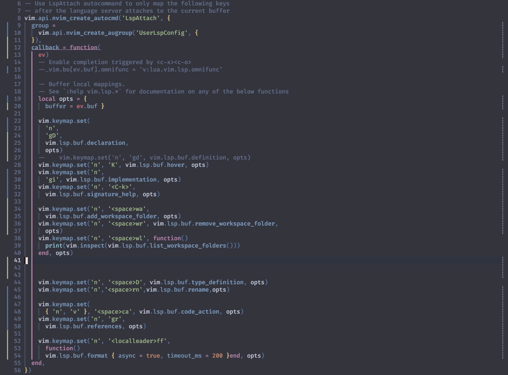
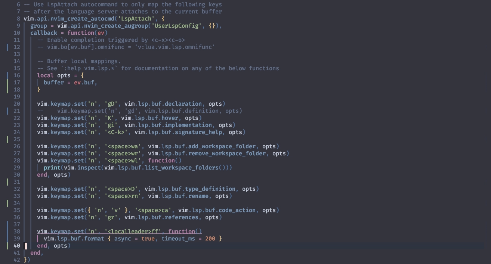

none-ls.nvim
null-ls.nvimが撤退しちゃったら、
このサイトでlinter/formatterを扱う機会もなくなっちゃったなー😑 っていう心残りがあったんですが...。
null-ls.nvim Reloaded, maintained by the community.
Only the repo name is changed for compatibility concerns. All the API and future changes will keep in place as-is.
null-ls.nvim リローデッド、コミュニティによってメンテナンスされます。
互換性を考慮し、リポジトリ名のみを変更。すべてのAPIと将来の変更はそのまま維持されます。
生きていたのか。null-lsの意志は...👁️
Let me take you down
'Cause I’m going to Strawberry Fields
きみを連れて行くよ
ぼくも Strawberry Fields に行くところなんだ
リポジトリはnvimtools/none-lsに移りましたが、パッケージ名はnull-lsのままで進むそうです🤗
このサイトの方針上、引用はそのまま載っけちゃうので、 (だってなんか "めんど"🙊 ...あ、いえ、なんでもないです😅)
null-lsって書いてあったりnone-lsって書いてあったりで「わちゃわちゃ」しますが、
少なくともこのサイトでは (語弊があるかもしれませんが) 同じものとして扱います。
これさえやってしまえば、心残りなんてあろうはずがありません😉
vim.lsp.buf.format
いきなり話が飛ぶようなんですが、nvim-lspconfigの設定の中にこんなのがありませんか❓
vim.keymap.set('n', '<space>f', function()
vim.lsp.buf.format { async = true }
end, opts)
なんだかとってもフォーマットしてくれそうな雰囲気が漂ってますね。
しかもasyncだなんて、これってセレブ感隠しきれてるんざます⁉️
いや、隠す気がないと言うべきか。
このサイトでは特に触れてこなかった (というよりは、わたしもそんなに詳しくはないので「これなかった」) んですが、
Language ServerがFormatter機能を持っていれば、これは既に動かせる状態になってます😲
例えばlua-language-serverは Features でも示されているように
Code formatting機能を含んでいます。
以下のようなぐっちゃぐちゃなコードがあったとしても...。

Spacef ってやってみると...。

こんな具合に正してくれます。
使用しているLanguage ServerがFormatterの機能を持っていなかったり、
もっと特化したFormatterやLinterを使いたい場合にnone-lsは輝きます⭐
Nothing is real
And nothing to get hung about
現実には何もない
だからこだわる必要もない
(Migration)
もし、これまでnull-ls.nvimを使っていた場合は、リポジトリのパスを変えるだけでもマジでそのまま動きます😉
Replace jose-elias-alvarez/null-ls.nvim with nvimtools/none-ls.nvim in your choice of package manager.
That's it.
お好みのパッケージマネージャーで、jose-elias-alvarez/null-ls.nvimをnvimtools/none-ls.nvimに置き換えてください。
これで完了です。
「初めまして」な人は次の項へ ❗
Setup
Install null-ls using your favorite package manager. The plugin depends on plenary.nvim, which you are (probably) already using.
お好みのパッケージ・マネージャを使って null-ls をインストールします。プラグインは plenary.nvim に依存します、 (おそらく) すでに使っていることだろう。
(おそらく) すでに使っていることだろうし、いつものようにこんな感じだろう❓
Living is easy with eyes closed
Misunderstanding all you see
目を閉じれば 生きるのは簡単だ
誤解だよ 全てが目に映るなんてのは
このサイトでは、none-lsに対してカスタマイズは行わないんですが、setup()は必要になります。
packer.nvimでは
config = function() require('none-ls').setup() end,
...とかやってたんですが、lazy.nvimを使用しているのであれば、
config = trueとするだけでsetup()が呼ばれるそうです。
{
'nvimtools/none-ls.nvim',
dependencies = 'nvim-lua/plenary.nvim',
+ config = true,
}
怠けられるところは積極的に怠けてっていいと思います😪
It’s getting hard to be someone
But it all works out
何者かになるのは難しくなってきた
でも 全てうまくいくよ
It doesn’t matter much to me
ぼくにはどうでもいい
Config
もうすっかりお馴染みのセリフですが、キーマップはお好みで😸
ついでに、タイムアウトを設けておくと安心感が増します。
vim.keymap.set('n', '<localleader>ff', function()
vim.lsp.buf.format {
+ timeout_ms = 200,
async = true,
}
end)
「どの程度の大きさのファイルを扱うのか」だったり、 マシンスペック、使用する
Formatterのパフォーマンス、その他諸々なんか等と相談して調整してね❗
No one I think is in my tree
I mean it must be high or low
ぼくの樹には誰もいない
きっと 高すぎるか 低すぎるんだ
That is you can’t, you know, tune in
But it’s all right
That is, I think, it’s not too bad
それじゃあ、気が合うわけないよね
でも それはそれでいいんだ
それが悪いってことはないさ
Setup
To get started, you must set up null-ls and register at least one source. See BUILTINS for a list of available built-in sources and CONFIG for information about setting up and configuring null-ls.
開始するには、null-ls をセットアップし、少なくとも 1 つのソースを登録する必要があります。 利用可能な組み込みソースの一覧については BUILTINS を、 null-ls の設定と構成については CONFIG を参照してください。
上にもあるように、BUILTINSとCONFIGを参考にして一個一個自分で書いていくのが正攻法です。
ソースのインストールも「自分でやってください」が基本です。
Always, no, sometimes think it’s me
But you know I know when it’s a dream
これがぼくだと思う いつも、いや、ときどき
でも分かるんだ これが夢であることは
なので「あっちこっち色々インストールしてこなきゃいけない❓🙄それはめんどくさい😮💨」な〜んて考えてしまうかもしれません。
が❗❗
安心してください。入ってますよ❗
そこをきっちりサポートしてくれる、とにかく明るいmason.nvimが既に入ってますよー❗
I think, er, no, I mean, er, yes
But it’s all wrong
That is I think I disagree
思うにこれは、NO じゃなくて YES なんだ
しかし すべて間違っている
ぼくは同意できない
そしてさらに、mason.nvimには心強い仲間がいるのです🤩
その名もmason-null-ls.nvim❗
つまり、もうちょっとだけ続く❗
続くったら続く... 🐅 🦍 🐘 🦒
...あれ❓なんか全然おわんねぇな🙄
Strawberry Fields Forever
意地でも聖夜🌃には間に合わせます。
none-lsに負けないくらい超スムーズにいきましょう😆
Strawberry Fields Forever 1
Strawberry Fields は永遠なんだ
Hurry up, Mimi – we're going to be late. 2
Mimi、はやく行こうよ。遅れてしまうよ。
1: Strawberry Fields Forever (by The Beatles): 作詞は John Lennon、作曲は Lennon-McCartney。The Bealtes のこれまでのシングルとは一線を画し、 現代のポップ・リスナーにとって斬新なリスニング体験となった。 この曲は、Liverpool にある救世軍の児童養護施設、Strawberry Field の庭で遊んだ Lennon の幼少期の思い出に基づいて書かれている。
John の出生時、父は商船の乗組員として航海中で不在。 母も他の男性と同棲していたため、John は母親の長姉である "Mimi おばさん" に育てられる。 後に Mimi は親戚に、「子どもは欲しくなかったが、John はずっと欲しかった」と打ち明けた。
John の子供時代の楽しみのひとつは、毎年夏に家の近くの Calderstones Park で開かれるガーデンパーティで、 そこでは救世軍のブラスバンドが演奏していた。
Lennon は 1966年9月から10月にかけて、Richard Lester の映画 "How I Won the War" の撮影中、 Spain の Almería でこの曲を書き始めた。The Beatles は、"more popular than Jesus" (キリストよりも人気がある) という論争や、 Pilipinas の Imelda Marcos 大統領夫人を不用意にこき下ろした反動で暴徒の標的になるなど、 最も困難な時期を経て、ツアーを引退したばかりだった。
時を経て、New York City の Central Park の一角には Lennon を偲び、この曲にちなんだ区画が造られた。 Wikipedia より
2: 「その場所には、いつも John を魅了する何かがあった。彼は窓からそれを見ることができた。 彼はよく救世軍のバンドがガーデンパーティで演奏しているのを聴いていて、『Mimi、はやく行こうよ。遅れてしまうよ』と私を引っ張っていった」。